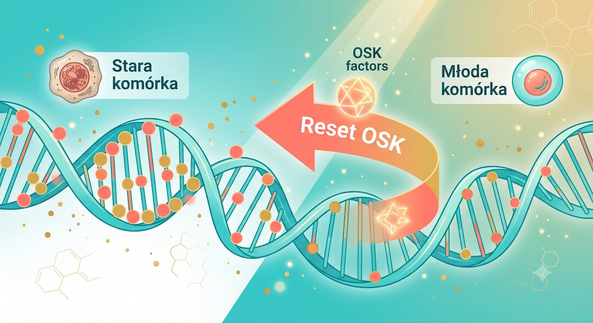

9 czerwca 2026 roku w Bostonie podano pierwszemu człowiekowi dawkę leku ER-100 — terapii genowej, która ma cofnąć biologiczny zegar w starzejących się komórkach oka. To ważny moment dla nauki o długowieczności, ale też dobra okazja, by sprawdzić spokojnie: co naprawdę wiemy — a czego jeszcze nie.
Szybka odpowiedź
Zastrzyk ER-100 to eksperymentalna terapia genowa podawana do oka, nie zabieg anti-aging dla całego organizmu; w fazie 1 obejmuje do 18 pacjentów z jaskrą otwartego kąta lub NAION, sprawdza przede wszystkim bezpieczeństwo, a pierwsze dane pod koniec 2026 lub na początku 2027 roku dopiero pokażą, czy warto przechodzić do oceny skuteczności.
Kluczowe wnioski
- 9 czerwca 2026 r. firma Life Biosciences podała pierwszemu pacjentowi terapię ER-100 — to pierwsze na świecie badanie kliniczne częściowego przeprogramowania epigenetycznego u człowieka.
- ER-100 to zastrzyk do oka (nie do całego ciała) — celuje wyłącznie w komórki siatkówki uszkodzone przez jaskrę lub NAION (nagłą utratę wzroku).
- Badanie fazy 1 sprawdza przede wszystkim bezpieczeństwo, nie skuteczność — wyniki pojawią się najwcześniej pod koniec 2026 lub na początku 2027 roku.
- Lek używa trzech z czterech czynników Yamanaki (OSK), które resetują epigenetyczny zegar komórki bez zmiany jej tożsamości ani DNA.
Co to właściwie jest epigenetyka i dlaczego ma związek ze starzeniem?
Wyobraź sobie, że Twoje DNA to partytura muzyczna — taka sama przez całe życie. Epigenetyka to sposób, w jaki orkiestra tę partyturę gra : które instrumenty brzmią głośno, które milczą, i jak ta gra zmienia się z wiekiem. Im jesteśmy starsi, tym bardziej wykonanie oddala się od oryginału — i właśnie to naukowcy nazywają epigenetycznym starzeniem .
Badania opublikowane w 2023 roku w czasopiśmie Cell przez zespół prof. Davida Sinclaira z Harvard Medical School wykazały, że zmiany epigenetyczne to jedna z głównych przyczyn starzenia ssaków — nie tylko jego skutek. Co ważniejsze: zmiany te można odwrócić. W eksperymentach na myszach naukowcy potrafili cofnąć lub przyspieszyć biologiczne oznaki starzenia, sterując właśnie epigenetyką; podobny kontekst praktyczny omawiamy też w tekście o tym, czym jest healthspan, a nie tylko lifespan.
Narzędziem, które to umożliwia, są czynniki Yamanaki — cztery białka (OCT4, SOX2, KLF4, c-MYC) odkryte przez japońskiego badacza Shinyę Yamanakę, który za to odkrycie dostał Nagrodę Nobla w 2012 roku. Włączone wszystkie razem, całkowicie resetują komórkę do stanu embrionalnego — co byłoby groźne. Ale włączone częściowo — tylko trzy z czterech — odmładzają komórkę, nie zmieniając jej tożsamości ani funkcji.

Jak działa lek ER-100 i kto za nim stoi?
ER-100 to terapia genowa opracowana przez bostońską firmę Life Biosciences, współzałożoną przez prof. Davida Sinclaira. Lek dostarcza do komórek siatkówki oka trzy czynniki przeprogramowania (OCT4, SOX2, KLF4 — w skrócie OSK), które mają przestawić epigenetyczny zegar komórki z powrotem na młodszy tryb.
Ważny jest sposób kontroli tego procesu. Lek podaje się raz — zastrzykiem bezpośrednio do ciała szklistego oka. Potem pacjent przez 8 tygodni bierze doustnie doksycyklinę — zwykły antybiotyk, który tutaj działa jak przełącznik: dopiero jego obecność uruchamia czynniki OSK w komórkach. Bez doksycykliny lek pozostaje uśpiony. Lekarze mogą więc terapię w każdej chwili zatrzymać.
Firma świadomie wykluczyła czwarty czynnik Yamanaki — c-MYC — bo jest on powiązany z niekontrolowanym podziałem komórek i ryzykiem nowotworowym. Wcześniejsze badania na myszach i małpach pokazały, że wariant OSK bez c-MYC jest bezpieczniejszy, a równocześnie cofa oznaki starzenia w komórkach oka.
Jakie choroby leczy ER-100 i dlaczego akurat oko?
Badanie fazy 1 dotyczy dwóch chorób nerwu wzrokowego: jaskry otwartego kąta (OAG) oraz NAION — niearterytycznej przedniej niedokrwiennej neuropatii nerwu wzrokowego. Tę drugą opisuje się często jako „udar oka” — może powodować nagłą, nieodwracalną utratę wzroku. Dla osób po 50. roku życia to ważna informacja: NAION jest właśnie najczęstszą ostrą neuropatią nerwu wzrokowego w tej grupie wiekowej .
Dlaczego badacze zaczęli od oka, nie od całego ciała? Oko jest narządem stosunkowo odizolowanym — zastrzyk do ciała szklistego nie trafia łatwo do reszty organizmu, co zmniejsza ryzyko działań niepożądanych gdzie indziej. Technika wstrzyknięć do oka jest dobrze znana w okulistyce (stosuje się ją m.in. w AMD), a zmiany w siatkówce można śledzić precyzyjnie za pomocą standardowych badań obrazowych; dla codziennej profilaktyki wzroku przyda się też tekst o okularach do czytania i akomodacji oka.
Jest jeszcze jeden powód. Komórki zwojowe siatkówki nie odrastają. Gdy ulegną uszkodzeniu w przebiegu jaskry lub NAION, utrata wzroku jest zazwyczaj trwała. Gdyby ER-100 potrafił przywrócić funkcję tych komórek przez epigenetyczne odmłodzenie, byłby to przełom nie tylko dla okulistyki, ale dla całej medycyny regeneracyjnej.
Co już wiemy z badań na zwierzętach i co jeszcze nie zostało potwierdzone?
Zanim ER-100 trafił do człowieka, przeszedł przez wiele lat badań laboratoryjnych. Pierwsze ważne wyniki opublikował zespół Sinclaira w 2020 roku: aktywacja czynników OSK u myszy z jaskrą przywróciła wzrok zwierzętom, które go wcześniej straciły. Myszy z tego badania — zwane „REVIVER” — wykazywały poprawę widzenia i cofnięcie markerów starzenia w komórkach siatkówki, mierzonych epigenetycznym zegarem.
Kolejny etap to badania na naczelnych — obiecujące wyniki stały się podstawą wniosku do FDA. W styczniu 2026 roku Agencja dała zgodę na badania fazy 1 u ludzi (tzw. IND clearance). To ważny krok formalny — ale nie oznacza zatwierdzenia leku. FDA uznała po prostu, że ryzyko jest wystarczająco niskie, by sprawdzić bezpieczeństwo u ludzi.
Czego jeszcze nie wiemy? Przede wszystkim — czy efekty z myszy i małp powtórzą się u człowieka. Ludzka biologia jest bardziej złożona, komórki starzeją się w innym tempie, a układ odpornościowy może inaczej reagować na wirusowe wektory dostarczające geny OSK. Badanie fazy 1 ma odpowiedzieć na pytanie o bezpieczeństwo — nie o skuteczność. Wnioski dotyczące leczenia wzroku będą możliwe dopiero po fazach 2 i 3, a to może zająć kilka lat.
Jak wygląda samo badanie i kto bierze w nim udział?
Badanie fazy 1 jest otwarte (open-label) i obejmuje do 18 dorosłych pacjentów : 12 z jaskrą otwartego kąta i 6 z NAION. Uczestnicy są rekrutowani w kilku ośrodkach. Protokół zakłada podanie ER-100 do jednego oka — nie obojga — oraz 8-tygodniowy kurs doksycykliny.
Głównym celem jest bezpieczeństwo: monitoruje się stany zapalne, reakcje immunologiczne i ewentualne niepożądane zmiany w komórkach oka. Dodatkowe punkty końcowe to wstępna ocena wzroku — ostrość widzenia, pola widzenia i obrazowanie siatkówki. Pierwsze wyniki spodziewane są pod koniec 2026 lub na początku 2027 roku.
Life Biosciences nie zamierza zatrzymać się na oku. ER-100 to pierwszy kandydat kliniczny z platformy Epigenetic Restoration — w planach są zastosowania dla innych narządów i chorób związanych z wiekiem. Na razie jednak wszystko zaczyna się tutaj: od oka i od sprawdzenia, czy jest bezpiecznie.
Co ten przełom oznacza dla nas — osób po 50. roku życia?
Media rozpisywały się o ER-100 jako o „leku cofającym starzenie podanym człowiekowi”. To prawda — ale niepełna. Na dziś jest to zastrzyk do oka, sprawdzający bezpieczeństwo u 18 pacjentów z poważnymi chorobami nerwu wzrokowego. Nie jest to terapia odmładzająca dostępna w klinice ani środek dla zdrowych osób. Nie ma też jeszcze żadnych danych o skuteczności u ludzi.
Ale znaczenie tego kroku jest duże. Po raz pierwszy w historii terapia oparta na przeprogramowaniu epigenetycznym — czyli bezpośrednim działaniu na biologiczny zegar komórki — trafiła do człowieka. Jeśli faza 1 potwierdzi bezpieczeństwo, otwiera się droga do faz 2 i 3, a potem do innych narządów. To realna perspektywa, nie science fiction.
Dla nas — osób po pięćdziesiątce — praktyczne znaczenie tej wiadomości jest na razie małe. ER-100 nie jest dostępny poza badaniem klinicznym. Warto jednak śledzić tę technologię, bo jaskra i NAION to choroby, które dotykają właśnie naszej grupy wiekowej. A przy okazji eksperci przypominają: epigenetyczny styl życia działa już teraz — regularna aktywność fizyczna, dobry sen, warzywa w diecie i mniej chronicznego stresu spowalniają biologiczne starzenie mierzone tymi samymi zegarami, które bada laboratorium Sinclaira; więcej o tym kierunku jest w artykule o treningu siłowym i starzeniu komórkowym DNA.
Kto finansuje wyścig o odwrócenie starzenia i jak to wpływa na kierunek badań?
Badania nad przeprogramowaniem epigenetycznym przyciągają miliardy dolarów prywatnych inwestycji. Altos Labs — z udziałem m.in. Jeffa Bezosa — zebrał ponad 3 miliardy dolarów i pracuje nad własną wersją terapii odmładzania komórek. Retro Biosciences, wspierane przez Sama Altmana z OpenAI, idzie nieco inną ścieżką. Inwestują też Merck i Eli Lilly.
Life Biosciences dotarła do pierwszego badania klinicznego jako pierwsza — ale prywatne pieniądze w nauce rodzą pytania. Kto będzie miał dostęp do terapii, jeśli okaże się skuteczna? Ile będzie kosztować? Czy prawo za tym nadąży? Te pytania środowiska bioetyczne stawiają już teraz — zanim jeszcze wiemy, czy ER-100 w ogóle działa u ludzi.
Warto wspomnieć o konkursie XPrize — nagroda wynosi 101 milionów dolarów za terapię, która przywróci pacjentowi 10 lat biologicznego wieku w ciągu roku leczenia. Prof. Sinclair zapowiedział udział z doustną wersją swojego leku na przeprogramowanie. Stawki są więc ogromne — i to dobrze pokazuje, jak poważnie nauka traktuje ten temat.
Zobacz też: AI w medycynie: co naprawdę pomaga pacjentom?
Najczęściej zadawane pytania
Czy zastrzyk ER-100 to terapia anti-aging dostępna dla pacjentów?
Nie. ER-100 jest w fazie 1 badań klinicznych, która sprawdza wyłącznie bezpieczeństwo terapii podawanej do oka. Lek nie jest dostępny poza badaniem i nie wiadomo, kiedy — ani czy w ogóle — uzyska rejestrację. Wyniki fazy 1 spodziewane są pod koniec 2026 lub w 2027 roku.
Czy ten zastrzyk odmładza cały organizm?
Nie. Badanie dotyczy wyłącznie komórek siatkówki oka. ER-100 podawany jest bezpośrednio do ciała szklistego oka i nie działa ogólnoustrojowo. Zastosowania dla innych narządów są planowane, ale wymagają oddzielnych badań i zgód regulacyjnych.
Co to są czynniki Yamanaki i dlaczego są ważne?
To cztery białka (OCT4, SOX2, KLF4, c-MYC) odkryte przez Shinyę Yamanakę, który dostał za to Nagrodę Nobla w 2012 roku. Potrafią zresetować komórkę do stanu embrionalnego. W ER-100 używa się tylko trzech — bez c-MYC — co pozwala odmłodzić komórkę bez ryzyka nowotworowej transformacji.
Czy NAION i jaskra dotyczą osób po 50. roku życia?
Tak. NAION jest najczęstszą ostrą neuropatią nerwu wzrokowego u dorosłych po 50. roku życia i może powodować nagłą, nieodwracalną utratę wzroku. Jaskra otwartego kąta dotyka głównie osoby po 60. roku życia i należy do najczęstszych przyczyn ślepoty na świecie.
Jak długo trwa terapia ER-100?
Protokół zakłada jeden zastrzyk do oka, a potem 8 tygodni doustnej doksycykliny, która aktywuje wstrzyknięte geny OSK. Lekarze mają kontrolę nad ekspresją czynników — doksycyklina działa jak przełącznik, który można wyłączyć w razie problemów.
Kiedy poznamy wyniki badania?
Pierwsze dane o bezpieczeństwie spodziewane są pod koniec 2026 lub na początku 2027 roku. Badanie obejmuje do 18 uczestników w kilku ośrodkach. Dane o skuteczności wymagają kolejnych faz badań — to może potrwać kilka lat.
Źródła
- Life Biosciences — oficjalny komunikat: pierwszy pacjent w badaniu ER-100 (9.06.2026)
- Life Biosciences — komunikat FDA IND clearance dla ER-100 (28.01.2026)
- ClinicalTrials.gov — badanie fazy 1 ER-100 w neuropatiach nerwu wzrokowego (NCT07290244)
- Nature Aging (2024) — Mechanisms, pathways and strategies for rejuvenation through epigenetic reprogramming (PMC)
- Genes & Diseases (2025) — Optimized Yamanaka factors combined with TERT for enhanced anti-aging effects (PMC)
- PubMed — Takahashi i Yamanaka: induction of pluripotent stem cells from mouse fibroblasts (2006)
- PubMed — Treatment of nonarteritic anterior ischemic optic neuropathy, Survey of Ophthalmology (2010)
Uwaga: Artykuł ma charakter informacyjny i edukacyjny. Nie zastępuje konsultacji lekarskiej, diagnozy ani leczenia.